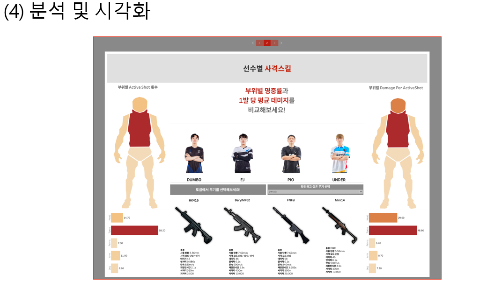
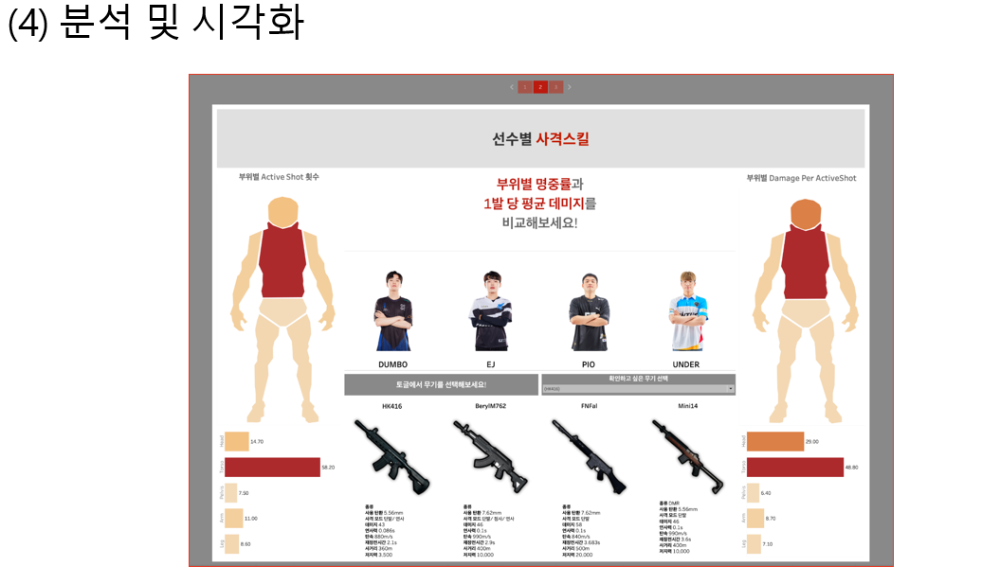
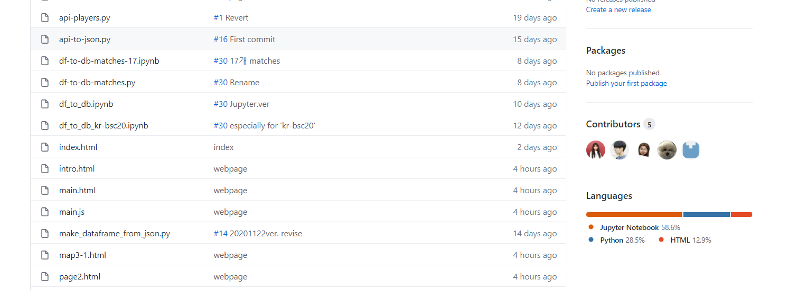
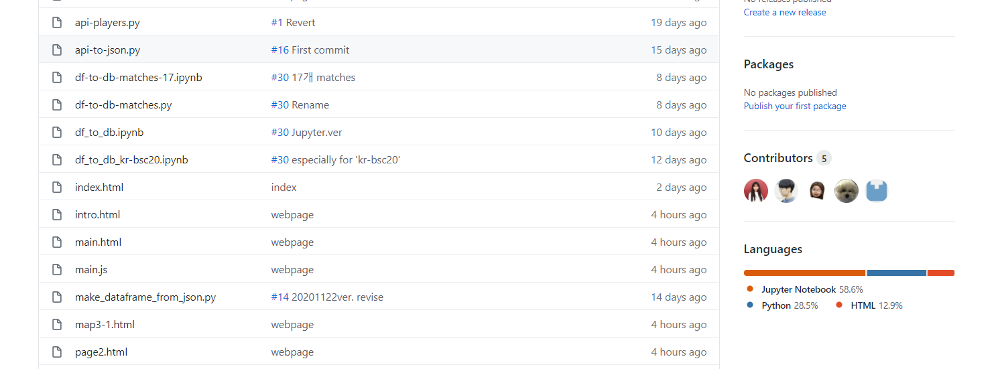

 

배틀 그라운드는 한 매치가 끝나면 약 80만 줄 이상의 로그가 쌓이고, 개발자 포탈에 공개됩니다.
저희는 오픈 API 주소를 받아 필요한 데이터를 추출하고, 파이썬을 통해 데이터 프레임으로 가공하는 작업을 거쳤습니다.
또한 큰 데이터를 모두가 효율적으로 다루기 위해 데이터 프레임으로 가공된 데이터를 MySQL 서버에 임포트 했고,
IDE(통합 개발 환경)를 활용해 연구소의 최종 데이터 베이스를 완성했습니다.
분석을 위한 집계는 SQL을 사용했습니다. 원하는 데이터를 뽑기 위한 쿼리를 짜고,
시각화
Plotly를 통한 간단한 시각화, 태블로를 통한 시각화 작업을 했습니다.
웹페이지 구현
마지막으로 자바 스크립트를 활용해 만든인터렉티브 웹 페이지를 통해 분석 결과를 업로드하고,
태블로 대시보드를 넣어 선수별 사격 스킬을 바로 확인할 수 있도록 구현했습니다.
본격적인 분석을 위해 데이터를 다루는 데 가장 유용했던 SQL
데이터를 추출하고 가공하는 과정에서 판다스가 가장 많이 사용 되었다면,
데이터베이스를 구축한 뒤 분석을 위한 집계 등에는
SQL이 가장 유용하게 사용되었습니다.
Process Manage
전체적인 프로젝트는 깃과 깃허브를 통해 버전과 이슈관리를 진행했습니다.
스케줄링은 노션과 슬랙을 통해 공유하고 진행했습니다.
프로젝트를 진행하면서 가장 만족했던 부분은 데잇걸즈에서 배운 내용을 남김없이
프로젝트에 적용해볼 수 있었다는 점입니다.
하나씩 복기하는 과정은 많은 배움을 주었습니다.
감사합니다. 에란겔 무기연구소 였습니다.